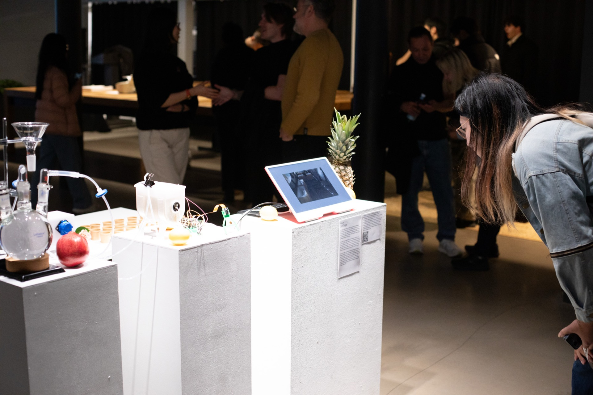
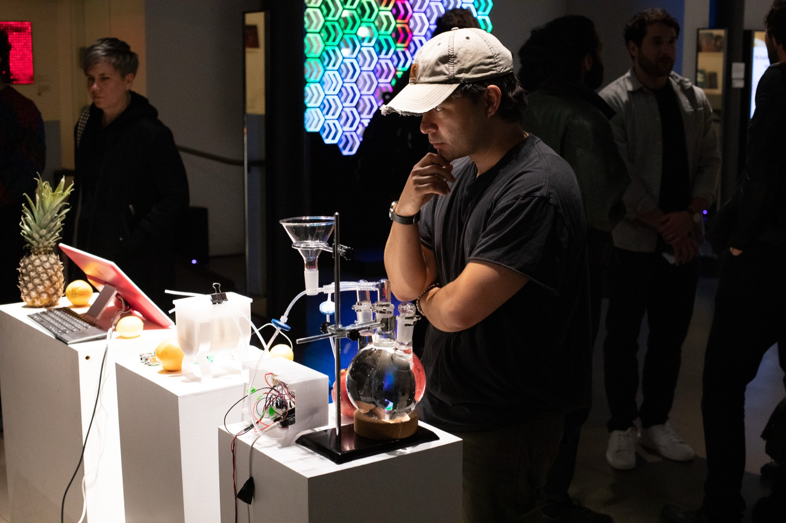
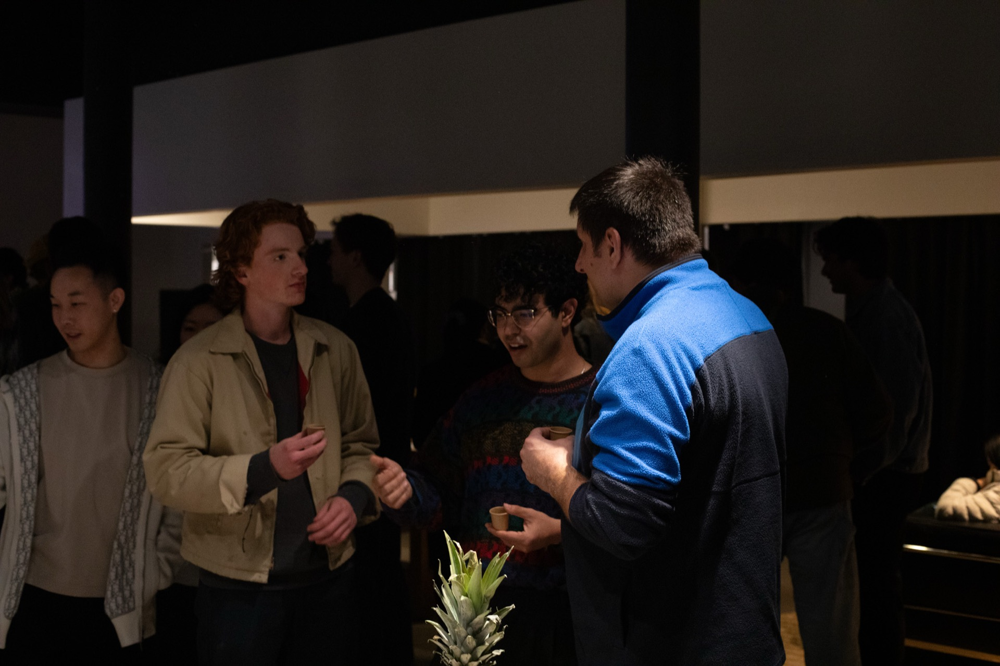
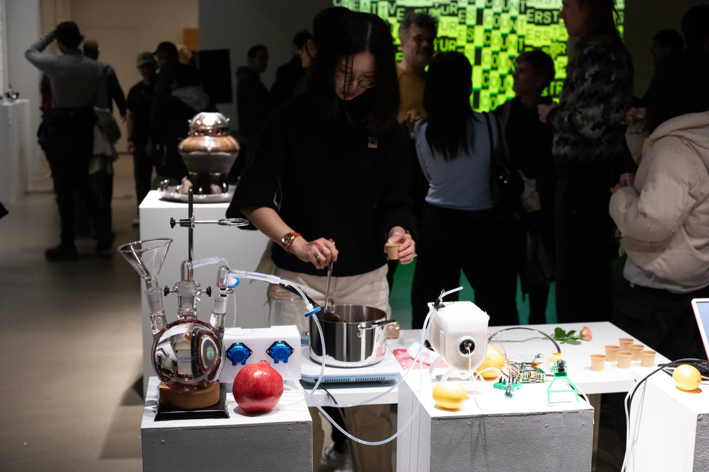
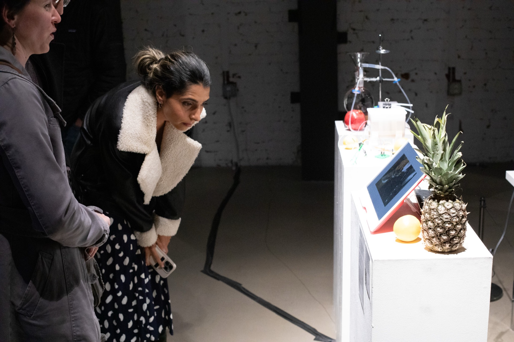

Soft Trigger
Soft Trigger explores what it means to feed an artificial intelligence with human food. In the work, food prepared during the performance is introduced into a system that gradually converts organic matter into small electrical pulses. These pulses supplement the power of a small AI hardware unit and occasionally register as “soft triggers,” prompting the AI to display a simple message: “I feel triggered.” Nothing more complicated follows. The response is minimal, almost tentative, and it may or may not occur at all during the exhibition, as the microbes operate on their own timeline.
The project grows out of an ongoing examination of food, nourishment, and triggering as embodied states that resist easy measurement. A trigger is ambiguous, difficult to describe, and yet unmistakably felt. By placing this complexity alongside a machine that processes energy rather than sensation, Soft Trigger asks what it means to enact care toward something that cannot articulate need or experience feeling. The process of preparing, tending, and feeding becomes a way to think about responsibility across different forms of life, and about the gestures we choose to make even when nothing demands them of us.
The installation requires consistent maintenance: microbial fuel cells must be monitored, glass vessels cleaned, materials replenished. These actions do not suggest that the AI has an interior life. Instead, they foreground care as a practice — a way of showing up, attending, and responding. While the project centers a technological system, it also points outward. Many people, both inside and outside the contexts where AI is developed, need care far more urgently than any device. By tending to this small system, Soft Trigger becomes a thought exercise about our own capacity for care, and about how we want to relate to humans and nonhumans in a world increasingly shaped by artificial intelligence.
This work is developed as part of the Mozilla Foundation Creative Futures Counterstructures Residency in partnership with tiat.place.
{kind=link}

{kind=link}

{kind=link}

{kind=link}

{kind=link}

Photography: Matt Faller, Nocellcoverage Studio